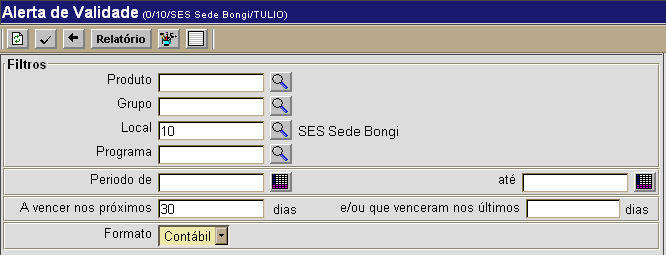

Alerta de Validade [ Voltar ]
Esta tela permite a consulta de produtos cujo prazo
de
validade já venceu ou está prestes a vencer. O usuário
pode realizar a consulta para um determinado produto,
um
grupo ou para todos os produtos em estoque.
O formulário "Alerta
de Validade " encontra-se dentro do menu "Estoque".
Ao clicar no menu "Alerta
de Validade", o sistema exibirá a seguinte tela:

Para gerar a listagem de produtos do alerta de validade,
siga os passos abaixo:
1º Passo: configure os filtros da pesquisa para retornar os resultados desejados. Os filtros disponíveis são:
- Produto. Especifique aqui um produto específico para esta pesquisa. Clique
no botão
 [Procurar] para selecioná-lo a partir de uma listagem de produtos cadastrados. [Procurar] para selecioná-lo a partir de uma listagem de produtos cadastrados. - Grupo. Clique
no botão [Procurar] para selecioná-lo a partir de uma listagem de grupos cadastrados.
- Local. Você pode especificar aqui um local específico para a consulta. Clique
no botão [Procurar] para selecioná-lo a partir de uma listagem de locais cadastrados.
- Programa. Especifique aqui um programa específico para esta pesquisa. Clique
no botão [Procurar] para selecioná-lo a partir de uma listagem de programas cadastrados.
- Período de / até.
Você pode utilizar datas de referência para gerar o relatório. Utilize
o campo "Período de" e/ou "até" para utilizar datas de início ou
término da pesquisa.
- A vencer nos próximos ... dias / e/ou que venceram nos últimos ... dias. Utilize estes campos para restringir a pesquisa a produtos que estão próximos a vencer ou venceram recentemente.
- Formato. Selecione um formato para o relatório: Contábil ou Físico.
Observação:
ao menos um dos dois campos mencionados acima deve ser preenchido para
que a pesquisa retorne resultados.
3º Passo: clique no botão  . Os resultados da consulta serão exibidos na tela,
como no exemplo abaixo. . Os resultados da consulta serão exibidos na tela,
como no exemplo abaixo.
Análise dos resultados
No
exemplo acima, a pesquisa teve a inteção de incluir produtos vencidos e
por vencer. Os produtos já vencidos são exibidos primeiro, em
bege e por ordem da data de vencimento.
Em seguida, são
exibidos os produtos por vencer. Os seguintes símbolos são utilizados
para facilitar o entendimento dos resultados:
Para produtos vencendo em um prazo maior que 90 dias, nenhum símbolo é
utillizado.
Ir
para o topo da página
|


 Produtos que vencerão nos próximos 30 dias;
Produtos que vencerão nos próximos 30 dias; Produtos que vencerão entre 31 e 60 dias; e
Produtos que vencerão entre 31 e 60 dias; e Produtos que vencerão entre 61 e 90 dias.
Produtos que vencerão entre 61 e 90 dias.